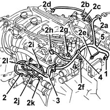
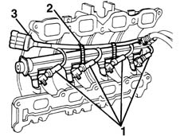

5510D22 electronic ignition leads - r+r
- Path
- Procedures > 55 ELECTRICAL EQUIPMENT > 5510 ENGINE IGNITION > 5510D spark plugs and lead > 5510D22 electronic ignition leads - r+r
- Kind
- repair procedure (removal / refitting; the operation number is the code)
- Applies to
- engines: 1.6 16v; all production periods
- Interactive page
- https://sloeber94.github.io/elrnDB-fMltpl/en/#/2891890
Applies to: engines: 1.6 16v; all production periods
 Removing
Removing
 Refitting
RefittingOpen the bonnet lid.
1. Disconnect the electrical connection from the electronic control unit.
 | Name | Connector |
|---|---|---|
1 | Engine management ECU |
2. Disconnect the electrical connections (2a, 2b, 2c, 2d, 2f, 2g, 2h, 2i, 2j, 2k, 2l, 2m).
| Name | Connector |
|---|---|---|
2a | Front/engine junction |
| Name | Connector |
|---|---|---|
2b | Idle actuator |
| Name | Connector |
|---|---|---|
2c | Throttle position sensor |
| Name | Connector |
|---|---|---|
2d | Integrated air temperature sensor |
| Name | Connector |
|---|---|---|
2e | Speedometer sensor |
| Name | Connector |
|---|---|---|
2f | Engine coolant temperature sensor |
| Name | Connector |
|---|---|---|
2g | Ignition coil |
| Name | Connector |
|---|---|---|
2h | Injector junction |
| Name | Connector |
|---|---|---|
2i | Alternator |
| Name | Connector |
|---|---|---|
2l | RPM sensor |
| Name | Connector |
|---|---|---|
2m | Starter motor |
| Name | Connector |
|---|---|---|
2n | Brake fluid level sensor (switch) |
| Name | Connector |
|---|---|---|
2o | Detonation sensor |
3. Open the rigid outer casing protecting the wiring.
4. Disconnect the wiring retaining bands.
5. Remove the wiring.

Applies to: engines: 1.6 16v; all production periods
If necessary, removing the wiring connecting the injectors:
- 1072A10 inlet and exhaust manifold - r + r and replace seals
1. Disconnect the electrical connections for the injectors.
2. Disconnect the retaining bands.
3. Remove the wiring.

Applies to: engines: 1.6 16v; all production periods
Refitting
RemovingCheck that the wiring is not damaged and, if necessary, check the electrical continuity.
If removed, position the injector connecting wiring, connect the electrical connections and fix the wiring with the retaining bands.
- 1072A10 inlet and exhaust manifold - r + r and replace seals
Place the electronic ignition wiring in position.
Connect the electrical connections.
Close the rigid protective outer casing.
Connect the wiring retaining bands.
Check the operation of the system using the Examiner or the other diagnostic equipment.
Topics linked from this page (14)
- A010B Alternator ( ENGINE )
- A020B Starter motor ( ENGINE )
- A30 Ignition coil
- D4 Front/engine junction
- D81 Injector junction
- K30 Brake fluid level sensor (switch)
- K43 Integrated air temperature sensor
- K45 Engine coolant temperature sensor
- K46 RPM sensor
- K50 Detonation sensor
- K56 Throttle position sensor
- K84 Speedometer sensor
- M010B Engine management ECU ( ENGINE )
- N74 Idle actuator